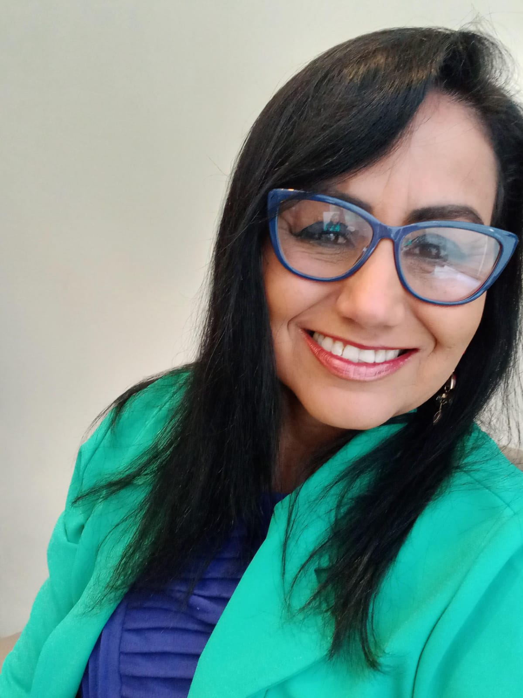

Apresentação

Sou pesquisadora, professora, consultora e palestrante na área de Acessibilidade Digital, Inclusão e Tecnologias Educacionais. Minha trajetória começou durante a graduação em Universidade Católica de Pernambuco, quando um encontro transformador com uma pessoa com deficiência visual despertou meu compromisso com a inclusão digital e humana.
Desde então, desenvolvo estudos, pesquisas e projetos voltados à:
- Acessibilidade digital
- Inteligência artificial aplicada à educação
- Tecnologia assistiva
- Inclusão educacional
- Desenvolvimento humano
- Neurociência e aprendizagem
Atuo há mais de 20 anos promovendo práticas inclusivas em instituições públicas e privadas, contribuindo para a construção de ambientes mais acessíveis, humanos e inovadores.
Trajetória Acadêmica
- Mestre em Ciência da Educação com foco em Acessibilidade Digital em Conteúdos Didáticos pela Universidad Americana
- Especialista em Informática Educacional pela Faculdade Frassinetti do Recife
- Especialista em Acessibilidade e Tecnologias Inclusivas pelo Centro Universitário Internacional UNINTER
- Graduada em Ciência da Computação pela Universidade Católica de Pernambuco
Áreas de Atuação
- Acessibilidade Digital: avaliação, consultoria e desenvolvimento de práticas acessíveis para plataformas digitais, conteúdos educacionais e ambientes culturais.
- Educação Inclusiva: metodologias inovadoras para ensino inclusivo utilizando tecnologias digitais e inteligência artificial.
- Tecnologia Assistiva: uso de recursos tecnológicos para promoção da autonomia e inclusão de pessoas com deficiência.
- Inteligência Artificial na Educação: aplicação de ferramentas de IA em processos educacionais acessíveis e personalizados.
- Formação e Capacitação: treinamentos, cursos e palestras para educadores, empresas e instituições.
Palestras
- Acessibilidade Digital na Educação
- Inteligência Artificial e Inclusão
- Tecnologias Assistivas
- Inclusão Digital e Social
- Educação Inclusiva
- Neurociência e Aprendizagem
- Formação de Professores na Era Digital
- Pesquisa Científica e Acessibilidade
- Desenvolvimento Cognitivo e Comportamental
As palestras são interativas, dinâmicas e adaptadas às necessidades de cada instituição, promovendo reflexões práticas sobre inclusão, tecnologia e transformação social.
Livros
- Acessibilidade Digital em Conteúdos Didáticos para Indivíduos com Deficiência Intelectual: obra que aborda acessibilidade digital, neurociência, estratégias adaptadas e inclusão educacional.
- Tecnologias Assistivas e Inclusão: livro voltado aos recursos de tecnologia assistiva, inclusão digital e elaboração de atividades culturais acessíveis.
Experiência Nacional e Internacional
Jornada Nacional: participação em palestras, projetos e formações em instituições como Porto Digital, SENAC, APAE, FAFIRE e Universidade de Pernambuco.
Jornada Internacional: participação em eventos e palestras na Espanha, Argentina, Paraguai e Colômbia. Destaque para participação na ExpoQA, evento internacional voltado à qualidade de software e inovação tecnológica.
Instituições e Empresas Parceiras
- Positivo Tecnologia
- Fundação Bradesco
- Secretaria de Educação
- Universidade Federal Rural de Pernambuco
- Universidade de Pernambuco
- T-ACCESS
- Fundación Universitaria del Área Andina
Missão
Transformando vidas através da inclusão digital. Acredito que a tecnologia deve aproximar pessoas, ampliar oportunidades e promover autonomia. Meu propósito é construir ambientes mais acessíveis, humanos e inclusivos, onde todas as pessoas possam participar plenamente da sociedade.
Contato
Email: adiconsulte@gmail.com
Telefone/WhatsApp: (21) 97128-3833
Localização: Brasil
Frase Final
“Inclusão não é adaptação. É pertencimento.”